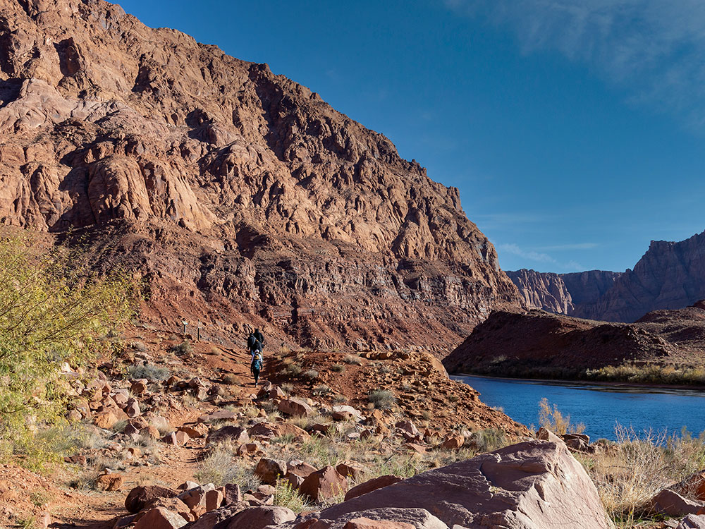
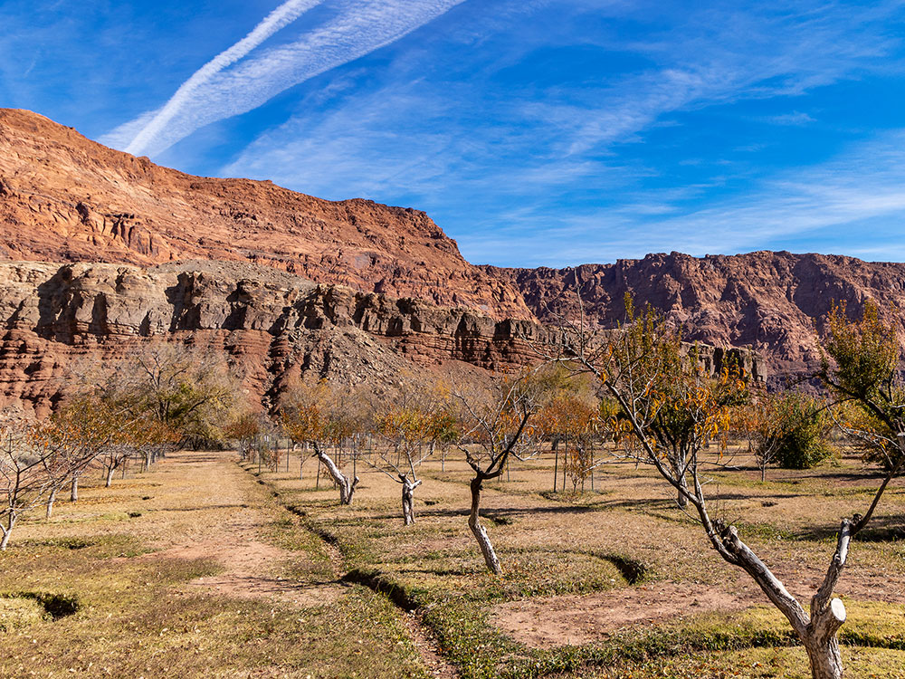
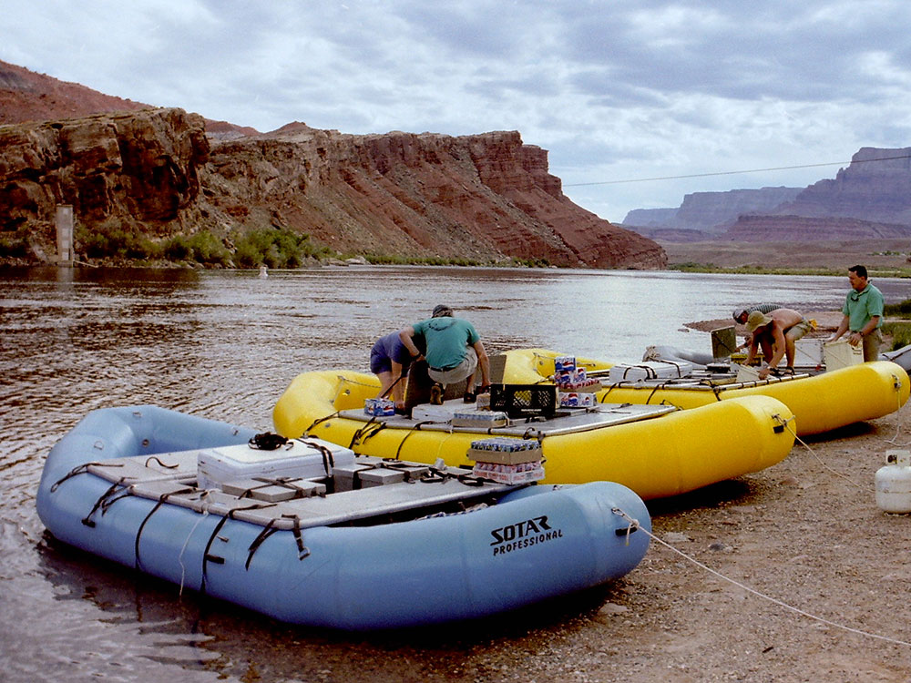
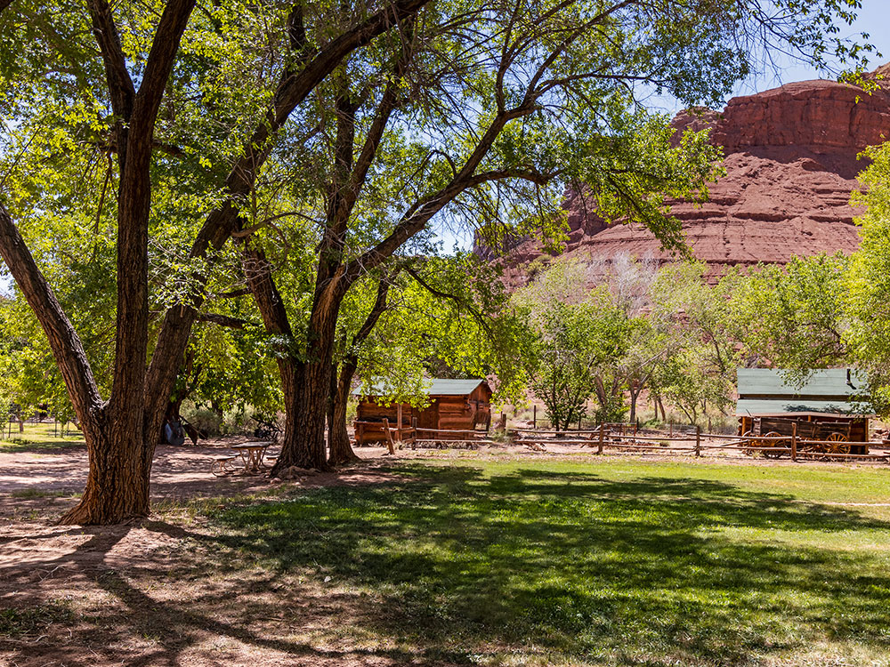
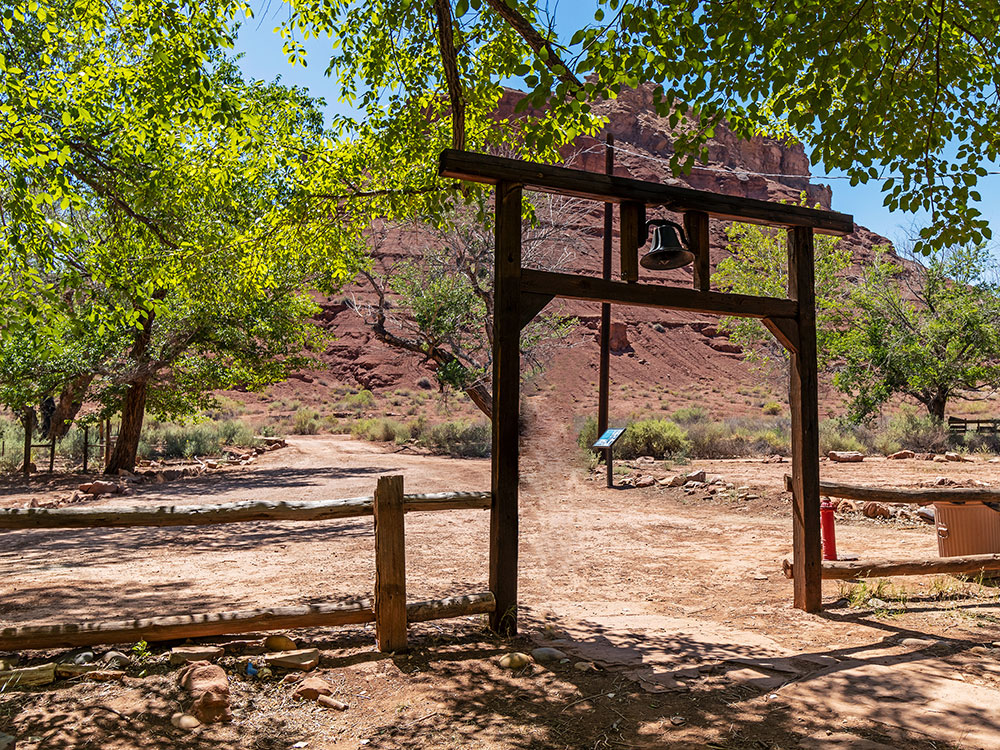

.jpg){kind=link}
Only place in hundreds of miles from which one can easily access the Colorado River from both sides and historically served as an important river crossing.
General Information
Accessible year-round as part of Glen Canyon National Recreation Area
Motorcycle (1–7 days): $25
Individual entry on foot or bicycle (1–7 days): $15
Children 15 and under: Free
America the Beautiful and other applicable federal passes accepted
Summer can be extremely hot; winter is quieter with cooler weather
How to Get There
From Page, AZ (42 mi): Take US-89 S to US-89A W, cross Navajo Bridge, then turn right onto Lees Ferry Road and follow it to the end.
Overview
Lees Ferry is a historic Colorado River crossing at the upstream end of the Grand Canyon, managed as part of Glen Canyon National Recreation Area in northern Arizona. It is the only place for many miles where the canyon walls open enough to allow access to the river, and it served as a ferry crossing from 1873, when John D. Lee established it, until 1928, when Navajo Bridge opened nearby. Today it is the official mile 0 of the Colorado River in the Grand Canyon, and almost every private and commercial Grand Canyon rafting trip begins here. The Lonely Dell Ranch, a historic pioneer homestead, and a blue-ribbon trout fishery on the cold, clear river below Glen Canyon Dam draw anglers and history lovers. Visitors come to fish, watch rafters launch, hike and camp beneath the Vermilion Cliffs.
Access
Lees Ferry is about 42 miles southwest of Page and about 15 miles northeast of Marble Canyon along US-89A. Cross Navajo Bridge, turn onto Lees Ferry Road and drive about 5 miles to the boat ramp and campground at the end. The road is paved and open year-round. Services are very limited, with no fuel or groceries at the site, so supplies should be bought in Page or Marble Canyon. A Grand Canyon rafting trip can start here, but most visitors come by car for fishing, camping and short walks.
Seasons
Spring and fall are the best seasons for visiting, with moderate temperatures and good fishing conditions. Summer is very hot, with temperatures often over 100 degrees, and most rafting trips run from April to October. Winters are mild during the day but cool at night, and the fishing remains good, making it a quiet time to visit. The Colorado River below the dam stays cold year-round, around 47 degrees, since it is released from deep in Lake Powell.
Things to Do
Stand at Mile 0 of the Grand Canyon
Lees Ferry marks the beginning of the Colorado River's journey through the Grand Canyon. Visitors can watch rafting groups load up and launch, especially in the morning.
Fish for Rainbow Trout
The stretch of river below Glen Canyon Dam is known as a blue-ribbon trout fishery, and many anglers fish from the shore or take guided drift-boat trips. An Arizona fishing license is required.
Tour Lonely Dell Ranch
The Lonely Dell Ranch preserves a pioneer homestead, with a cabin, orchard and cemetery, and tells the story of the Lee and Johnson families who lived here.
See the Lees Ferry Historic District
The remains of a trading post and stone buildings, as well as the old ferry landing, show how the site served travelers and settlers.
Camp and Hike Beneath the Vermilion Cliffs
Trails lead from the campground to canyon viewpoints and washes, with the cliffs glowing at sunrise and sunset.
Top Trails
Lonely Dell Ranch Trail
Length: Approximately 1 mile round trip
Elevation Gain: Minimal
Difficulty: Easy
This walk visits the ranch buildings, orchard and cemetery near the river, with interpretive signs about the settlers who lived here.
Cathedral Wash Trail
Length: Approximately 3 miles round trip
Elevation Gain: Moderate
Difficulty: Moderate
This trail descends a dry wash with several scrambles to a view of the Colorado River. Flash floods are a risk in monsoon season.
Spencer Trail
Length: Approximately 4.2 miles round trip
Elevation Gain: Approximately 1,500 feet
Difficulty: Strenuous
This steep switchback trail climbs the cliff above the ferry to a rim viewpoint with sweeping views of the river and canyon. It should be avoided in summer heat.
Visitor Centers
There is a ranger station and contact point at Lees Ferry with information on fishing, camping, boating and trail conditions, as well as restrooms and a small exhibit area. The nearest large visitor centers are the Carl Hayden Visitor Center at Glen Canyon Dam in Page and the Navajo Bridge Interpretive Center near Marble Canyon, which has exhibits and views of the bridges and the canyon. Hours vary by season, so check the National Park Service website.
Camping and Lodging
The Lees Ferry Campground sits near the river with tent and RV sites and restrooms but no hookups, and first-come, first-served sites fill quickly in the spring and fall. Lodging, restaurants and a fishing shop are available at Marble Canyon, about 15 minutes away, including the Lees Ferry Lodge and Marble Canyon Lodge. Page, about 45 minutes away, offers a much wider range of hotels and restaurants, and Kanab, Utah, is about 1.25 hours west. Check each location's website for current availability.
Sources: National Park Service official Glen Canyon National Recreation Area information, including details on Lees Ferry history, rafting access, fishing, hiking trails, and visitor amenities.
https://www.nps.gov/glca/planyourvisit/lees-ferry-area.htmhttps://www.nps.gov/glca/planyourvisit/lees-ferry-area.htm
Additional information verified through National Park Service resources and Glen Canyon visitor information covering Cathedral Wash Trail, Spencer Trail, Colorado River recreation, Marble Canyon geology, and the historic Lees Ferry settlement.
https://www.nps.gov/glca/index.htmhttps://www.nps.gov/glca/index.htm Additional information from the National Park Service.
This article uses material from the Wikipedia article "Lees Ferry", which is released under the Creative Commons Attribution-Share-Alike License 3.0
This article uses material from nps.gov "Glen Canyon National Recreation Area"








